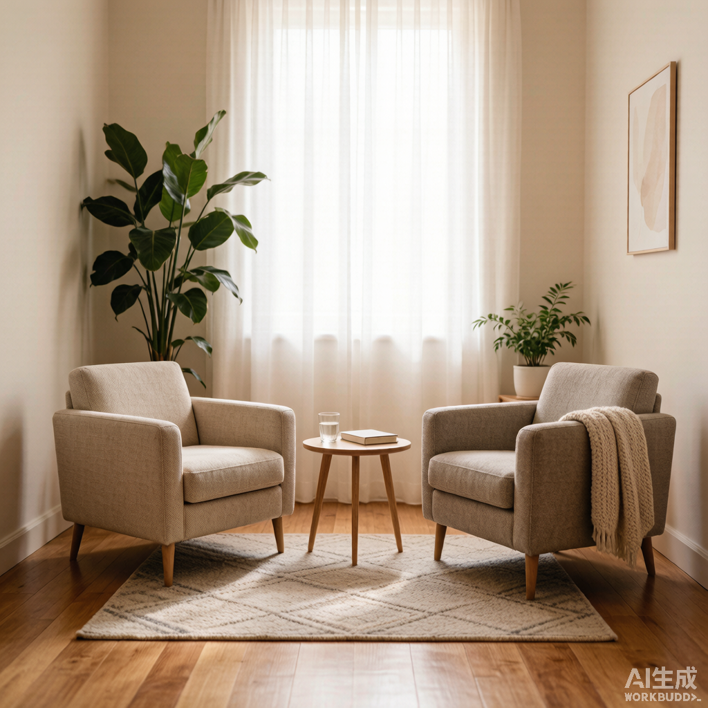

我们的服务
三大领域，多维视角，为你提供量身定制的咨询方案
玄学 · 借古观今
我们相信，古老的东方智慧并非迷信，而是一套观察人生节律与宇宙能量的符号系统。通过命理、塔罗与风水，我们帮助你在关键节点做出更清醒的判断。
命理分析
八字、紫微斗数，解析先天禀赋与人生大运。
塔罗占卜
针对具体困惑，借助塔罗意象厘清当下能量。
风水顾问
住宅与办公空间布局优化，提升环境和谐度。
择吉咨询
重要决策的时间窗口建议，如签约、出行、开业。
适用场景
- 事业方向不明、面临转型或重大抉择
- 想了解自身天赋禀赋与运势节奏
- 新居装修、办公室布局希望趋吉避凶
- 重要签约、出行、开业前的择时参考

心理 · 向内生长
在现代生活的快节奏中，情绪与关系问题往往被忽视。我们提供专业的心理支持，帮助你认识自己、管理情绪、改善关系，走向更自洽的状态。
情绪管理
识别情绪触发器，建立稳定的自我调节机制。
自我认知
探索内在需求、价值观与人生目标。
关系疏导
伴侣、家庭、职场关系中的沟通与边界修复。
压力调适
针对职业倦怠与焦虑状态的综合支持。
适用场景
- 长期情绪低落、焦虑失眠影响生活
- 与伴侣、家人、同事关系紧张难以化解
- 职业倦怠、找不到自我价值感
- 重大变故后的心理重建与创伤修复
财经 · 稳健致远
财富增长不仅需要机会，更需要理性的框架。我们结合宏观研判与行为金融视角，为你提供可执行的投资分析与理财规划方案。
投资分析
股票、基金、资产配置的深度分析与跟踪。
理财规划
基于现金流与目标的个性化理财方案。
市场洞察
宏观经济与行业趋势的定期研判报告。
行为纠偏
识别投资中的认知偏差，避免情绪化决策。
适用场景
- 有闲置资金但不知如何配置
- 家庭财务目标（教育、养老、购房）规划
- 投资频繁亏损、追涨杀跌难以自控
- 关注宏观与行业趋势，需要专业研判
常见问题
关于服务流程、收费方式与隐私保护的常见疑问
不同服务板块与咨询形式（线上/线下、时长）对应不同收费标准。提交咨询需求后，我们会根据你的具体情况提供清晰的报价方案，确保透明无隐性费用。
玄学咨询通常需要提供准确的出生年月日时；心理咨询建议提前梳理最困扰你的 1-3 个问题；财经咨询请准备基本资产、收入与风险承受能力信息。
我们严格遵守保密原则，所有咨询内容与个人信息仅用于服务交付，未经你的明确同意不会向任何第三方披露。
线上咨询是我们最常用的服务形式，效果与线下相当，且更加灵活。我们使用稳定的视频会议工具，确保沟通顺畅。
当然可以。很多来访者会同时关注事业、情感与财务问题。我们会根据你的需求，安排擅长综合视角的顾问或跨领域团队协作。